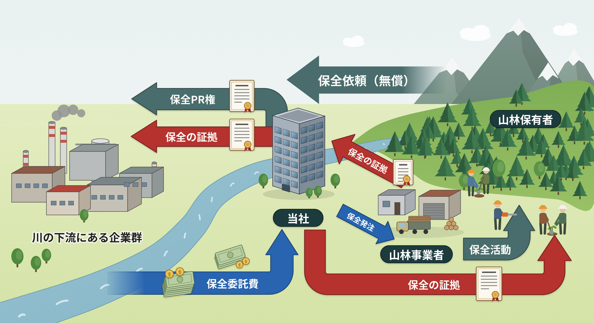
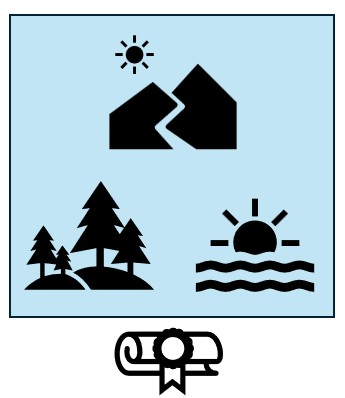
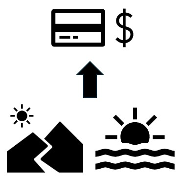
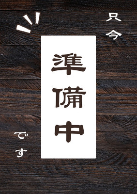

自然アセットの保全と、企業の環境価値を繋ぐ新しい仕組み
手入れを待つ山林や、保全が必要な沿岸の自然環境。
そして、脱炭素や自然関連情報の開示に向けた投資先を探す企業。
私たちは、この両者を持続可能な形で結びつける専門事業者です。
上流の山から下流の海へと至る水系を一つの価値として捉え、
企業の環境予算を社会の共有財産である自然の保全へと循環させます。


地域に眠る山林や沿岸アセットについて、企業が継続して費用負担を行える適正なスキームへとパッケージ化します。
自然関連情報開示に耐えうる客観的な資料として保全の事実を記録・可視化し、対外的に説明可能な形へと変換します。
森林組合や漁協などの地域事業者と密に連携して実務を発注し、実効性のある保全活動と地域経済への還元を実現します。

創出された保全の成果について、必要に応じて国が認証するJ-クレジット等の取得代行および活用支援を行います。
三井住友信託銀行にて証券ディーラーおよび法人向けコンサルティング営業としての実務経験を積んだ後、大阪大学での学生起業家支援、アントレプレナーシップ教育への従事を経て本事業を構想。
金融分野の組成力に加え、宅地建物取引士や一級小型船舶操縦士、陸/海上特殊無線技士等の資格を有し、金融・不動産・海事の専門知見を横断。自然アセット特有の砂防指定地や漁業権等の複雑な権利関係の整理と、大企業の審査に耐えうる適正なスキーム構築を主導する。
三井住友トラストグループにおいて、7年間システム開発、保守に従事するシステムエンジニア。クラウドデータベース構築における行内第一人者を務める。
本事業におけるシステム、セキュリティ関係統括。初期構想からの協力者。

| 会社名 | 株式会社GEO BRIDGE |
|---|---|
| 設立 | 2027年5月（予定） |
| 事業内容 |
・自然アセットの保全アレンジメント事業 ・企業の自然関連情報の記録および開示サポート ・環境価値（クレジット等）の組成・仲介事業 |
| 所在地 | 本事業につき、行政の協力と1件目の成約が重要である。よって、成約に向けた実現性が高い場所に本店を設置する予定 |